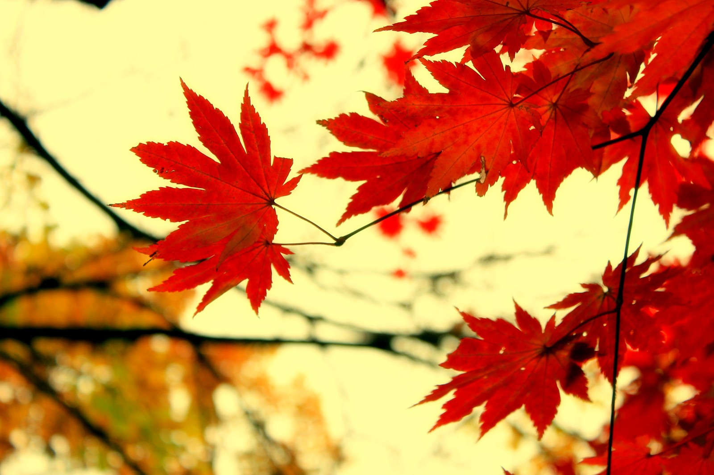

秋
2015.11.03
作者：吴泽发

秋意已去
寒冬到来
每个季节的交替
代表着时光的流逝
匆匆地
即将迎来北方的第三个冬天
大一时
我期待第一场雪
也许人们对新鲜的事物总是带有好奇
我每天关注着天气预报
那年只下了一场小雪
不过内心还是无法抗拒的兴奋
大二时
我由期待变成了平静
看到大一学弟、学妹们对雪期待的样子
我想起了当年同样的心情
就像平静的湖面起了一点波澜
那年还是错过了大雪
不过内心已经接受了这一切
此时的我
期待而又平静
期待的是今年能见到一场真正的大雪
平静的是要是再错过内心还是能接受
也许不同的年纪
看待问题的心情不同
年轻时可原谅的率真
可以肆无忌惮地把内心
所爱、所要、所憎、所恨的不扣修饰空诸于口
所以如果能有一颗永远年轻的心
那该多好
慢慢地
感受到这个社会的现实
有时候即使再怎么努力
终究还是有些事令人无能为力
慢慢地
学会去努力
试图通过自己的努力
让这个社会看起来更好
慢慢地越来越沉默
遇到事情一个人静静面对
很多事情除了你自己
别人帮不了你
年轻就是资本
青春不怕迷茫
愿所有的努力能让自己成为想成的人